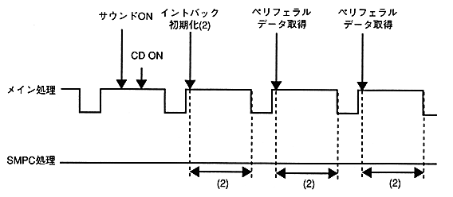
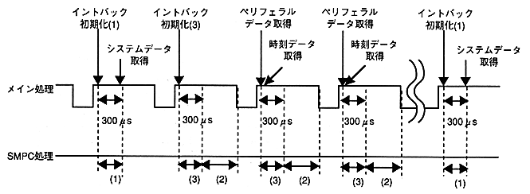

Return to previous page ｜ Return to menu ｜ Go to next page
- (2) Pattern 2

(3) Pattern 3

-
4.2.3 Restrictions
-
● Common
-
- Do not issue a command until 300μs after V-BLANK IN.
Do not issue a command from the - Intback command issue until the next V-BLANK IN.
- Note on execution with multiple tasks
When using a library with multiple tasks, if the interrupt task is switched, the SMPC does not perform exclusive control of the SMPC. .
Therefore, when executing with multiple tasks, it is necessary to perform exclusive control of the library separately on the user side.
- Refer to the SMPC User's Manual for restrictions from the slave SH2.
- Command processing time may vary from 20μS to 100μs by SMPC internal processing once per second.
-
● Non-intback command issue function
-
- There are no restrictions other than the common (above).
Return to previous page ｜ Return to menu ｜ Go to next page